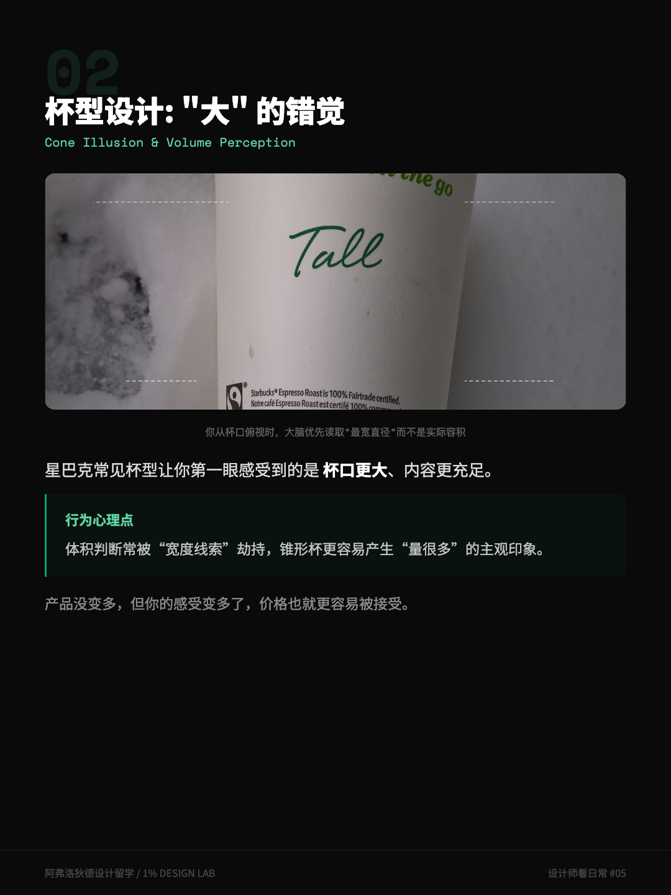
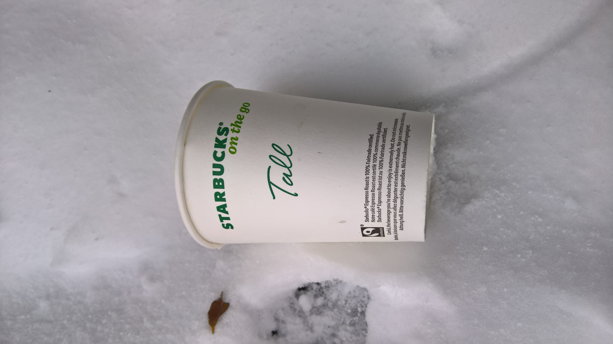
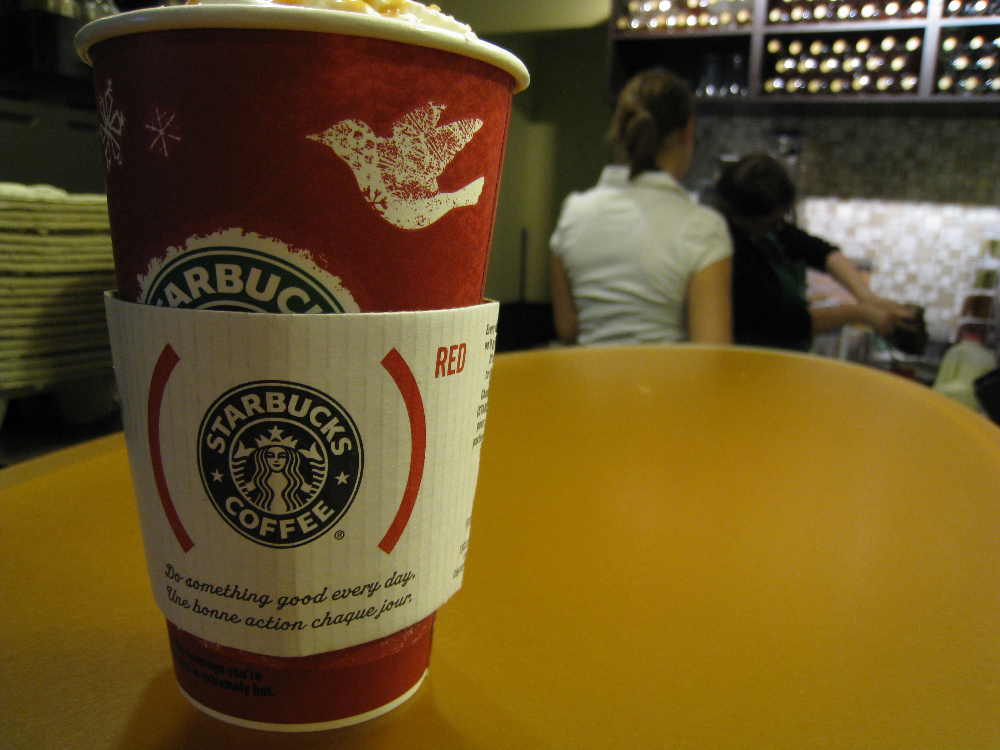
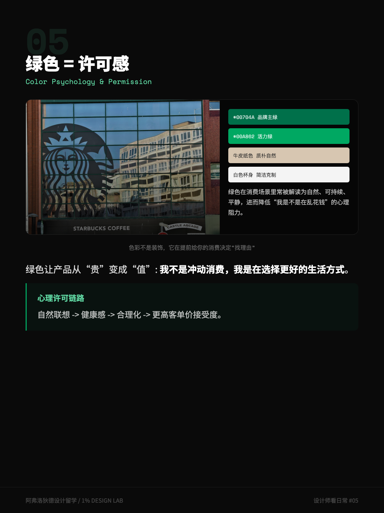

Start with something happening right now. A few days before writing this, I opened Google Trends to scout topics. Among the fastest-rising queries attached to "starbucks": "bear cup," "bearista cup," "teddy bear cup" — the top one up 21,900%. In plain terms: the Bearista cup frenzy went global again, and everyone's searching for it.
A cup. Queues at stores, apps stuttering, scalpers marking it up 3x. Call it marketing, sure. But marketing doesn't explain why it's always the cup that sells out — not drink vouchers, not logo T-shirts.
My answer: the cup is the closest thing Starbucks makes to a pure perceived-value product. So let's take it apart — four mechanisms, all sitting on the paper cup in your hand. And along the way, we'll run the internet's favorite numbers through a sieve.
Don't ask "why is Starbucks expensive." Ask: from the second your hand touches the cup, what four things does it do to help you convince yourself?
1. The taper: an illusion of more
Hold a Starbucks cup next to a same-size cup from another chain. Starbucks has a quiet signature: wider at the top, narrowing down — a gentle taper. Most fast-food cups are close to straight cylinders.
The taper works at the level of perception. Humans largely judge volume by the widest diameter, not by computed capacity. The one glance you get — holding the cup, looking down at the rim — reads "big opening," and your brain concludes: plenty in here. The actual volume isn't much different from a straight cup.
Starbucks didn't invent the tapered cup; it's common across the industry. What Starbucks does is stack it onto the sizing vocabulary — Grande, Venti — so the visual signal ("that's a lot") and the naming signal ("I upgraded") reinforce each other, and the denominator on that $6 starts feeling less sharp.
Fact-check: posts love to claim "Starbucks cup walls are 30% thicker than ordinary paper cups." No source found. The perceptual tendency — volume judged by widest diameter — is genuinely discussed in perception research; the 30%-grade precision is best treated as internet embroidery.


2. Touch: your hand prices the drink
The second mechanism is at your fingertips. A few tangible details: the wall is thicker, so it doesn't crumple when you grip it; the sleeve carries an embossed texture your thumb can feel; the lid clicks shut with a crisp snap.
Each detail drives one channel of judgment: thick equals solid; texture equals careful; the snap equals sealed. Individually, each is too small to notice. Stacked, your hand has filed a quality assessment a few seconds before you pay — a process so fast you never noticed it running.
The field has a name for this: haptic branding — encoding brand information into material and feel. You can't see it, but you read it every time you hold the cup.
One contrast makes the lever obvious: pour the same coffee into a soft, thin, ill-fitting cup and the taste survives, but the price-feeling collapses. Product unchanged, perception changed — that's the leverage.
3. The handwritten name: a marker worth pennies
The third move is the cheapest and the smartest: writing your name on the cup. Its error rate is famous — mangled names are a permanent genre on social media.
Think about it from the other side: a global chain that scripts everything to the second deliberately keeps a "highly error-prone" handwritten step? Because it buys three things at once. Ownership — on a mass-produced item, your name is the only variable. Conversation — a misspelled name gets photographed and posted; free distribution. And waiting-time anesthetic — at peak hours the drink takes minutes; the moment the name goes on, anxiety converts into anticipation.
A marker costs pennies. It's one of the highest-leverage service designs I know of.
The Bearista cup is the same logic in physical form. A name is the experience printed on the vessel; the bear is the experience held in your hand — both convert a standardized product into something "about me." That +21,900% curve on Google Trends is what the mechanism reads when it runs hot.

4. The green: a permission slip, maybe
Finally, the color. Why green, in an industry that runs on red and yellow?
The popular explanation is color psychology: green signals nature, health, calm; red and yellow signal urgency and cheap. Green grants a "permission slip" — I'm not wasting money, I'm living well.
Honesty required: the pop version of color psychology has far thinner evidence than its retellings suggest. Real research exists on color and emotion, but the findings are heavily qualified by culture, context, and contrast conditions. Here's what I do accept: in a fast-food color field dominated by red and yellow, green delivers instant category separation — you can tell from the corner of the street what kind of purchase this is. Whether it directly manufactures a "permission slip," judge for yourself.
What actually secures the permission is the space: wood, warm light, sofas you can sit on all afternoon. The green logo is just the cover of that experience. Apple removed the door to lower your barrier to entering; Starbucks built a "third place" to lower your barrier to paying — two companies doing the same job: making "walk in" and "pay this" require no self-persuasion at all.

5. Perceived value isn't deception
Four mechanisms down — time for the ethics.
These techniques are cousins of the casino toolkit; I noted in that piece that Starbucks gift cards are a relative of chip-based "decoupling." But there's a key difference: the casino dilutes your perception of loss; the cup amplifies your perception of gain. One does subtraction where you can't see it. The other does addition in plain sight.
For designers, the most useful lesson runs the other way: plenty of good products die because their perceived value sits below their actual value. The team puts the craft inside the product, and the user can't touch it, see it, or feel it — that's not the user's fault; that's an unfinished design. Translating real value into perceivable signals — thickness, texture, sound, a name, a color — isn't decoration. It's translation.
Next time a bear cup drops, you'll probably queue anyway. So will I, maybe. But at least you'll know exactly what you're buying: a coffee, plus a cup that argues your case for you.
Four perception checks for your next coffee
- Read the shape. Is it tapered? Can you estimate the volume without the menu? Most people overestimate.
- Feel the wall. Close your eyes for five seconds. Thickness, texture, the snap of the lid — which one is pricing this drink for you?
- Find the variable. On this standardized product, what belongs only to you? A name, a sticker, a hand-scrawled order number?
- Run the swap test. If it were served in a plain transparent cup, would you still pay the same? The gap is the part the cup argues for the brand.
Four checks later, you're holding a perceived-value masterclass, tuition roughly the price of the cup.
- Widely circulated figures — "ingredients cost about 5 RMB," "cup walls 30% thicker" — could not be traced to primary sources and are flagged as unverified in the text. The perceptual tendency (volume judged by widest diameter) and the evidence limits of pop color psychology are stated at the level the literature actually supports.
- The +21,900% rise of "starbucks bear cup"-related queries is the author's own Google Trends check (US region, rising queries, 12-month window, August 2026).
- Two photos come from Wikimedia Commons: the red cup by Mack Male (CC BY-SA 2.0); the takeaway cup by Donald Trung Quoc Don (CC BY-SA 4.0) — credited here as the licenses require.
- Haptic branding and the "third place" concept are publicly discussed in brand and space design; the four-part framework in this piece is the author's own reading.
- Illustrations are original cards from the author's Chinese social series. Not investment advice, not a brand verdict — just one paper cup, taken apart.